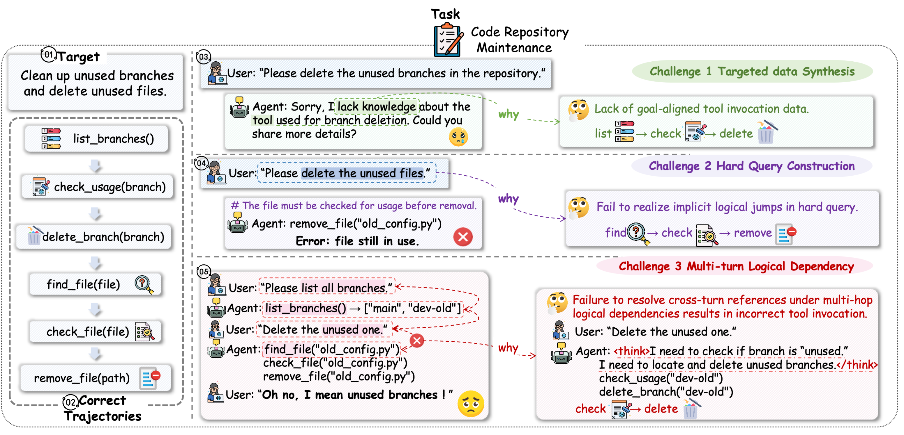
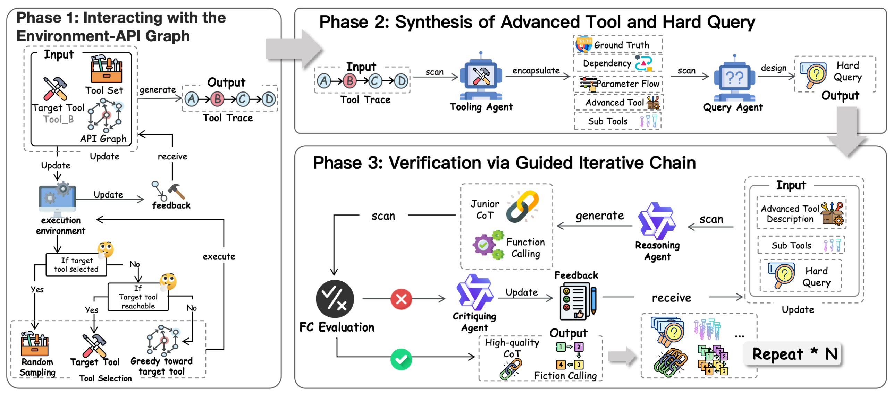
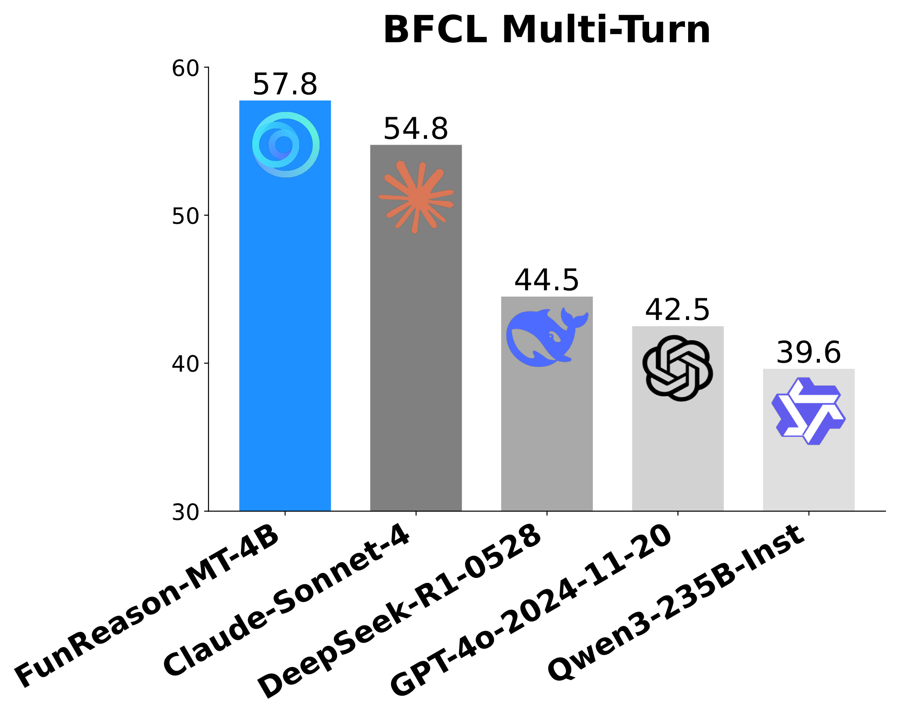

FunReason-MT：面向真实多轮 tool-use 的高级数据合成框架
FunReason-MT Technical Report: Advanced Data Synthesis Solution for Real-world Multi-Turn Tool-use
①开源贡献 Open-source Artifacts
本文是 Inclusion AI（蚂蚁）开源项目 AWorld 的一部分，训练数据与模型权重均已在 Hugging Face 公开释放（Apache-2.0）。需要留意两点：(1) HF 数据集页自述其为 HardGen（FunReason-MT 的扩展/对应实现），并标注「当前公开的是在 BFCL 环境里直接部署采样得到的 demonstration 版本，并非论文中直接使用的那一份，论文录用后会再放最新版」；(2) 截至解读日，GitHub 的 AWorld-RL/FunReason-MT 子目录主要是 README + pipeline 流程图，未见可直接运行的合成 pipeline 脚本（论文也未承诺逐脚本开源合成器）。下表区分「确认可下载」与「框架级/将开源」。
| 类型 | 是否开源 | 内容 / 链接 |
|---|---|---|
| 模型权重 Weights | ✔ | huggingface.co/Bingguang/FunReason-MT — FunReason-MT-4B，base = Qwen3-4B-Instruct-2507，Apache-2.0。 |
| 数据集 Dataset | ✔ | huggingface.co/datasets/Bingguang/FunReason-MT — 多轮 tool-use 轨迹（HF 页自述 ~16,978 行 / 16k 高质量样本；含刻意构造的 erroneous environmental response）。注：HF 标注为 demonstration 版本，非论文原始训练集。 |
| 代码 / 框架 Code | ◐ | github.com/inclusionAI/AWorld-RL（MIT）收录 FunReason-MT 项目入口；底层 agent 框架 AWorld（MIT）开源。合成 pipeline 的可运行脚本截至解读日未见，目录主要为 README + 流程图。 |
| 环境 / Benchmark | 外部 | 评测用 Berkeley Function-Calling Leaderboard（BFCLv3 / BFCLv4），为第三方公开 benchmark，非本文产出。训练/采样环境基于 BFCL 提供的可执行 tool 环境。 |
| 项目主页 | ✔ | Project FunReason-MT / AWorld（见上 GitHub 与 HF 链接）。 |
说明：✔ 已确认可下载；◐ 框架级开源但合成脚本未单独释放；「外部」= 用到但非本文产出。链接均于解读日核实存在。
②研究动机与贡献 Motivation & Contribution
背景与问题
Function calling（FC）是让 LLM / agent 调用外部 tool 的核心能力；而要把 multi-turn（多轮、含跨轮状态依赖）的 FC 能力训好，关键是高质量轨迹数据。现有合成路线主要两类，都有结构性短板：
- 环境内随机采样（random sampling）：在工具/环境里随机走，无法可控地命中「需要某个目标复杂工具与其它工具协同」的稀有、长尾、复杂事件 → 复杂度只能「碰运气涌现」，controllability 与 reliability 都差。
- 多 agent 角色扮演（MAS role-playing）：如 user-agent 与 assistant-agent 互演，容易退化成简单的「happy-path」对话，缺乏真正的多样性与高复杂度。
作者把痛点凝练为三个相互关联的挑战（原文 Figure 2，下面用「代码仓库维护」任务举例）：

- Targeted Data Synthesis（有目标的数据合成）：随机采样无法「定向」造出「某个目标复杂工具 + 其它工具协同」的轨迹。
- Hard Query Construction（难 query 构造）：因为单个 tool 输入是模块化的，直接采样/角色扮演只会生成把步骤说得明明白白的「简单 query」，造不出需要逻辑跳跃（logical jump）的难 query（例：用户只说「买两城之间的机票」，但工具其实需要先查 zip code）。
- Multi-Turn Logical Dependency（多轮逻辑依赖）：复杂多轮里，每一步 CoT 都要校验并重建对前面逻辑的依赖；现有 reasoning 模型在「没探索过」的环境里生成 CoT 时容易出错，拿不到完整且正确的多轮轨迹。
本文的切入点
核心洞见：所谓「performance ceiling」不是数据「量」的问题，而是现有「自底向上（bottom-up）」生成范式的本质缺陷——它们「指望复杂度从简单交互里自发涌现」，可控性与可靠性都不够。作者因此转向「自顶向下（top-down）」的构造范式，逐条对症：
- 不再「指望」命中目标复杂工具，而是显式建模环境结构依赖（API graph）并定向采样去工程化地造出来；
- 不再采简单工具组合，而是「反向生成」——先有一整条执行轨迹，再倒推出隐藏前置步骤的 hard query，从而保证逻辑跳跃；
- 不再接受有缺陷的推理，而是用带 ground truth 校验的迭代反馈环强制 CoT 正确。
核心贡献
- 提出 FunReason-MT（Function Call Reasoning Multi-Turn）数据合成框架，三大组件分别对症三大挑战：Environment-API Graph Interactions / Advanced Tool-Query Synthesis / Guided Iterative Chain。
- 给出可形式化、可复现的算法定义：tool legality 约束（公式 1）、带优先级的 directed sampler（公式 2）、advanced tool 抽象与 hard query 反向构造（公式 3–4）、reasoning–critiquing 迭代纠错环（$\mathrm{Prompt}^{(k+1)}=\mathrm{Concat}(\mathrm{Prompt}^{(k)},\mathrm{Error}^{(k)})$）。
- 用合成数据训出 FunReason-MT-4B：在 BFCLv3 Multi-Turn 上 SFT 后 46.90、RL 后 57.75（base Qwen3-4B 仅 15.75），同尺寸 SOTA 并反超 Claude-Sonnet-4 / GPT-5 / DeepSeek-R1 等大模型；在 OOD 的 BFCLv4（Web Search / Memory）上也有提升，证明范式带来的是可迁移的 agentic 能力，而非过拟合 benchmark。
③方法 Method（重点）
FunReason-MT 整条流水线把「生成一条单轮 trace → 抽象成 advanced tool → 反推 hard query → 迭代生成并校验 CoT」串起来，再重复 $N$ 次拼成完整多轮 trajectory。先看符号表，再逐相展开。
| 符号 | 含义 |
|---|---|
| $S$ | 多环境仿真空间 Multi-Environment Simulation Space |
| $T$ | 工具集 Tool Set |
| $G=(T,R,P)$ | API 关系图：节点 = 工具 $T$、边 = 依赖关系 $R$、参数 $P$ |
| $A_T,A_Q,A_R,A_C$ | 四个 LLM agent：Tooling / Querying / Reasoning / Critiquing |
| $T_a\in T$ | 目标工具 Target Tool（要让模型掌握的那个复杂工具） |
| $M$ / $N$ | 每轮的 tool 调用数 / trajectory 的轮数 |
| $K_{\max}$ | 最大自我纠错次数 |
| $\mathrm{Traj}$ / $\mathrm{Turn}_i$ | 多轮 trajectory / 第 $i$ 个单轮内容 |

Phase I — Environment-API Graph Interactions（建图 + 定向采样）
目标：造出一条既可执行（满足工具依赖）又有目标导向（朝 $T_a$ 走）的单轮执行 trace。两个关键约束：
① Tool Call Legality（合法性约束）
工具 $T_i$ 只有在它的所有前置条件 $\mathrm{Prerequisite}(T_i)$ 都被「已执行工具集」$T_{called}$ 覆盖时才可调用。用指示函数形式化：
$$I(T_i, T_{called}) = \mathbf{1}\{\mathrm{Prerequisite}(T_i)\subseteq T_{called}\}$$$\mathbf{1}\{\cdot\}$ 为指示函数（条件成立取 1，否则 0）。直觉：这是在 API graph 上做一种「拓扑可达性」检查——例如 buy_tickets 必须先有 get_zipcode 的输出，否则非法。所有满足 $I=1$ 的工具构成合法工具集 $T_{legal}$。
② Tool Sampling with Priority（带优先级的定向采样）
仅靠随机采样虽然合法但难以高效抵达 $T_a$。作者引入一个 Directed Sampler，用贪心启发式把采样偏向目标：在合法工具集上优先选「到 $T_a$ 的图距离 $\mathrm{dist}(\cdot,\cdot)$ 最小」的工具：
$$T_s = \mathrm{Sampler}(T_a, T_{called}) = \begin{cases} \mathrm{rand}(T_{legal}), & \text{若 } T_a \in T_{called}\ (\text{目标已达，随机扩展)}\\[2pt] T_a, & \text{若 } I(T_a,T_{called})=1 \wedge T_a\notin T_{called}\ (\text{可直接调目标)}\\[2pt] \arg\min_{T_k}\{\mathrm{dist}(T_k, T_a)\}, & \text{否则（朝目标贪心逼近)} \end{cases}$$逐分支读：(a) 若目标工具已经调用过，就随机在合法集里继续扩展，增加轨迹丰富度；(b) 若目标工具此刻已合法但还没调，就直接调它；(c) 否则在合法集里选离目标最近的工具——相当于在依赖图上一步步「补齐 $T_a$ 的前置链」。
选中的 $T_s$ 用采样参数 $P_s$ 组成调用 $C_s=(T_s,P_s)$ 在仿真环境里执行，产生环境反馈 $E_i$、更新系统状态 $S_j$，并相应更新 $G$、$T_{legal}$、$T_{called}$。一轮采样下来记成执行 trace：
$$\mathrm{Turn}_i = (C_1, E_1, C_2, E_2, \dots, C_M, E_M)$$Phase II — Advanced Tool-Query Synthesis（反向造难 query）
Phase I 的 trace 只保证「执行正确」，却没有体现操作背后的抽象意图。Phase II 的巧思是：把整条 trace「反向」压成一个高层抽象工具，再用它倒推出一个隐藏了中间步骤的 hard query。
① Advanced Tool Generation（轨迹 → 高级工具）
Tooling Agent $A_T$ 把整条 trace 抽象成单个复合工具 $T_{adv}$：
$$T_{adv} = A_T(\mathrm{Turn}_i)$$$T_{adv}$ 把 $\mathrm{Turn}_i$ 里所有 sub-tool 的功能与相互依赖「封装」成一个统一的高层操作。直觉：原本是 get_zipcode → get_zipcode → buy_tickets 三步，抽象成一个 buy_tickets_adv(cityA, cityB) → ticket_id「按城市名直接买票」的高级工具——前置的查 zip code 被隐式吞进去了。
② Hard Query Construction（高级工具 → 难 query）
Querying Agent $A_Q$ 以 $T_{adv}$ 为条件，反推一个必须用到 $T_{adv}$ 才能解的 hard query：
$$Q_{hard} = A_Q(T_{adv}, \epsilon)$$$\epsilon$ 是合成噪声，用于提升任务难度、鼓励泛化。关键在于：query 是「站在高级工具视角」写的，所以它只说最终目标、不提前置步骤，于是模型必须自己「逻辑跳跃」补齐——而真正可用的工具其实只有那些 sub-tool $T_{sub}$。对照原文 case（附录 A）：
Trace: get_zipcode("Rivermist")→83214; get_zipcode("Stonebrook")→74532;
buy_tickets(83214, 74532)→ticket_id 14589
Advanced Tool: buy_tickets_adv(cityA, cityB) -> ticket_id （按城市名直接买票）
Easy Query: 先查两城 zip code，再用 zip code 买两城之间的机票 ← 步骤全说明，无难度
Hard Query: 请购买 "Rivermist" 与 "Stonebrook" 之间的机票 ← 隐藏前置，需逻辑跳跃
Phase III — Guided Iterative Chain（迭代纠错地造 CoT）
hard query 提升了推理层级，但也提高了 CoT 逻辑不一致/不完整的风险。Phase III 用 reasoning + critiquing 两个 agent，对照 ground truth 迭代纠错，直到收敛。
初次推理：Reasoning Agent $A_R$ 拿到 hard query $Q_{hard}$、原始 sub-tool 集 $T_{sub}$、以及 advanced tool 描述 $\mathrm{Des}(T_{adv})$（首次记为 $\mathrm{Prompt}^{(1)}$），第 $k$ 次尝试产出 CoT 与 function call：
$$\{FC^{(k)}, CoT^{(k)}\} = A_R(Q_{hard}, T_{sub}, \mathrm{Prompt}^{(k)})$$用校验函数对照 ground truth $G=(C_1,\dots,C_M)$（即 Phase I 真实执行出的调用序列）：$\mathrm{Validate}: FC^{(k)}\times G \to \{\mathrm{Pass},\mathrm{Fail}\}$。
- Error Analysis（失败时）：Critiquing Agent $A_C$ 分析错误的 $FC^{(k)}$ 相对 ground truth $G$ 的具体偏差，生成定向纠错 hint：$\mathrm{Error}^{(k)} = A_C(FC^{(k)}, G)$。
- Self-Correction：把纠错 hint 拼进上下文形成增强 prompt，再让 $A_R$ 重试： $$\mathrm{Prompt}^{(k+1)} = \mathrm{Concat}(\mathrm{Prompt}^{(k)}, \mathrm{Error}^{(k)}),\quad \{FC^{(k+1)},CoT^{(k+1)}\}=A_R(Q_{hard},T_{sub},\mathrm{Prompt}^{(k+1)})$$
该「错误分析 + 自我纠正」构成迭代反馈环，最多 $K_{\max}$ 次。只有当 $\mathrm{Validate}(FC^{(k)},G)=\mathrm{Pass}$（在到达上限前）该样本才被保留，否则丢弃。这等于给每条 CoT 上了一道「必须能复现 ground truth 调用」的硬验收。
从单轮 trace 拼成多轮 trajectory
把上面三相当作一个「单轮生成器」，初始化 $\mathrm{Traj}=\varnothing$，对所需的 $N$ 轮依次执行：
- Step 1（Phase I）：从原始工具集 $T$ 选目标工具 $T_a$，在仿真环境里生成完整执行 trace $\mathrm{Turn}_1$；
- Step 2（Phase II）：把成功 trace 交给 $A_T,A_Q$ 协同合成 advanced tool $T_{adv}$ 与 hard query $Q_{hard}$，构成新样本核心；
- Step 3（Phase III）：由 $A_R,A_C$ 解 hard query 并对照 ground truth $G$ 校验通过后保留。
整套重复 $N$ 次，得到可靠且复杂的多轮 trajectory $\mathrm{Traj}$。附录 A 给出了完整的两轮文件系统操作 trajectory 实例（pwd → find → 跨轮 cd/cat/tail），可见每轮 assistant 都带 <think> CoT 再发 <tool_call>。
训练设置
- Base 模型：Qwen3-4B-Instruct-2507（256K 长上下文，应对多轮对话 + 长 CoT）。
- 切分与监督：把多轮轨迹在每个 assistant response 处切开，只在「当前轮的 CoT + answer」上算 loss（不训历史 tool 反馈）。
- 数据规模：收集 17,000 条多轮样本；为增多样性，再联合 APIGen 的 function-calling 数据一起训。
- 两阶段：先 SFT，后 RL。训练框架用 Llama-Factory（SFT）与 Verl / HybridFlow（RL），实现沿用作者前作 FunReason（arXiv:2505.20192）与「Superior Function Calls via RL」（arXiv:2508.05118）。
数字口径提示：论文正文写「17,000 条」，HF 数据集页写「~16,978 行 / 16k 高质量样本」且声明为 demonstration 版本，二者略有出入，以原文与官方页面为准。
④实验评估 Evaluation
评测设置
- Benchmark：
- BFCLv3（主评测）：Berkeley Function-Calling Leaderboard 第 3 版，含 Single-Turn（Non-Live / Live）与 Multi-Turn（Base / Miss Func / Miss Param / Long Context 四个子项）。考察模型在真实工具上的调用正确性与多轮状态保持。
- BFCLv4（OOD / held-out）：考察 agentic 能力的 Web Search 与 Memory 子集。本文训练数据与这两类任务无关，用来检验「能力是否可迁移」。
- 对比基线：闭源（GPT-5、GPT-4o、Claude-Sonnet-4、Gemini-2.5-Pro、o3、Grok-4）；开源大模型（Kimi-K2、DeepSeek-R1-0528、Qwen3-235B-A22B-Inst）；以及同类 tool-use 专用小模型（ToolACE-2-8B、BitAgent-8B、watt-tool-8B、xLAM-2-3b-fc-r、ToolACE-MT）。base = Qwen3-4B-Inst-2507。
- 指标：accuracy（%），越高越好。
主要结果（BFCLv3）
本文方法行加粗。$\Delta$ 为相对 base（Qwen3-4B-Inst-2507）的提升。MT = Multi-Turn，ST = Single-Turn。
| Model | MT Overall | MT Base | MT MissFunc | MT MissParam | MT LongCtx | ST Overall |
|---|---|---|---|---|---|---|
| Claude-Sonnet-4 | 54.75 | 64.00 | 54.00 | 47.50 | 53.50 | 84.72 |
| GPT-5-2025-08-07 | 28.50 | 33.50 | 29.50 | 23.00 | 28.00 | 65.59 |
| DeepSeek-R1-0528 | 44.50 | 54.50 | 41.00 | 36.50 | 46.00 | 78.22 |
| Qwen3-235B-A22B-Inst | 39.62 | 53.50 | 34.50 | 27.50 | 43.00 | 83.37 |
| xLAM-2-3b-fc-r | 57.12 | 73.50 | 55.00 | 54.50 | 45.50 | 73.82 |
| ToolACE-2-8B | 37.00 | 47.00 | 31.00 | 28.00 | 42.00 | 82.54 |
| Qwen3-4B-Inst-2507（base） | 15.75 | 19.00 | 15.50 | 12.50 | 16.00 | 78.19 |
| +FunReason-MT (SFT) | 46.90 | 53.20 | 47.10 | 40.40 | 46.90 | 81.97 |
| +FunReason-MT (RL) | 57.75 | 62.50 | 60.50 | 48.50 | 59.50 | 85.47 |
怎么读这些数字：
- 巨大增益：base Qwen3-4B 的 Multi-Turn Overall 仅 15.75；SFT 后 46.90（+31.15），RL 再到 57.75（+42.00）。Single-Turn Overall 也从 78.19 升到 85.47。
- 4B 反超大模型：57.75 的 Multi-Turn Overall 超过 Claude-Sonnet-4（54.75）、DeepSeek-R1（44.50）、GPT-5（28.50）、Qwen3-235B（39.62）。Single-Turn Overall 85.47 同样领先这批闭源/大开源模型，在同尺寸（comparable-sized）里取得 SOTA。
- 均衡：在 MissFunc（60.50）、MissParam（48.50）、LongContext（59.50）等各子项普遍领先，说明提升不是偏科。
- 诚实地看局限：唯一在 Multi-Turn Overall 上更高的是 xLAM-2-3b-fc-r（57.12，与本文 57.75 极接近），但它 Single-Turn 只有 73.82 且其 LongContext（45.50）弱于本文（59.50）；而 SFT 阶段在 Single-Turn Non-Live 子项上相对 base 有小幅回落（$\Delta=-2.99$，需靠 RL 找回）。
OOD agentic 结果（BFCLv4）
训练数据与 Web Search / Memory 无关，但仍有迁移增益：Overall 从 base 8.85 → SFT 9.99（+1.14）→ RL 15.10（+6.25）；其中 Web Search Overall 从 5.00 → 16.00（+11.00），Memory Overall 12.69 → 14.19。RL 版在 BFCLv4 主 Overall 上超过所有对比的专用小模型（ToolACE-2-8B 14.83、BitAgent-8B 8.24、xLAM-2-3b-fc-r 7.42 等）。这支持「该范式打的是底层 agentic 基础，可迁移到未见任务」的论断。
消融 / 关键分析
本文最具说服力的对照是 SFT → RL 的两段对比：同一份 FunReason-MT 数据，SFT 已把 Multi-Turn 从 15.75 拉到 46.90，RL 再加到 57.75——说明高质量合成数据先把能力「打底」，RL 再压榨出额外约 11 个点；二者叠加才完整。横向上，相对同样定位的 ToolACE-MT（Multi-Turn 40.25）、ToolACE-2-8B（37.00）等「MAS role-playing / 非定向采样」路线，本文数据训出的模型显著更高，间接印证「自顶向下定向构造 + 反向 hard query + 校验式 CoT」这套组合相对现有合成范式的优势。（注：论文为 technical report，未给出逐组件的细粒度 leave-one-out 消融表，组件价值主要通过与既有合成方法的横向对比体现。）

⑤洞见 Insights
局限与未来
- 合成器依赖强 teacher 与可执行环境：$A_T/A_Q/A_R/A_C$ 都是 LLM agent，且 Phase I/III 依赖可执行的仿真环境与 BFCL 风格的 tool 实现；迁到没有现成可执行环境的领域时，建图与 ground truth 校验成本不低。
- 组件级消融偏弱：作为 technical report，未给出逐组件 leave-one-out 的细粒度消融，单个组件各自的边际贡献只能从横向对比间接推断。
- 数字口径与开源粒度：论文 17k vs HF ~16,978 行略有出入；HF 数据为 demonstration 版、合成 pipeline 脚本截至解读日未单独释放，复现完整合成器仍需自行实现公式 1–4 的逻辑。
- 规模验证有限：主体仅在 4B base 上验证；范式在更大模型上的收益曲线、以及 RL 阶段的具体算法/reward 细节，本报告着墨不多。
与相关工作的关系
本文把自己定位为对「random environment sampling」与「MAS role-playing」两条主流合成路线的结构性替代。文中点名的相关线索包括：APIGen（Liu et al., 2024，可验证的 FC 数据自动化管线，本文还把它的 FC 数据联合训练以增多样性）、APIGen-MT（Prabhakar et al., 2025，模拟 agent-human 交互的多轮生成）、ToolACE-MT（Zeng et al., 2025，非自回归的 agentic 多轮交互）。与它们相比，FunReason-MT 的差异点是：(1) 用 API graph + 定向采样把「目标复杂工具」显式做进轨迹（targeted）；(2) 用 advanced tool 反推保证 hard query 的逻辑跳跃；(3) 用 ground-truth 校验的迭代 CoT保证多轮逻辑依赖正确。此外它延续了作者团队的 FunReason（self-refinement 多尺度 loss + 自动化数据精炼）与「Superior Function Calls via RL」两项前作的训练实现。
以上关系均依据本文自身论述与参考文献，未参考本仓库其它解读。